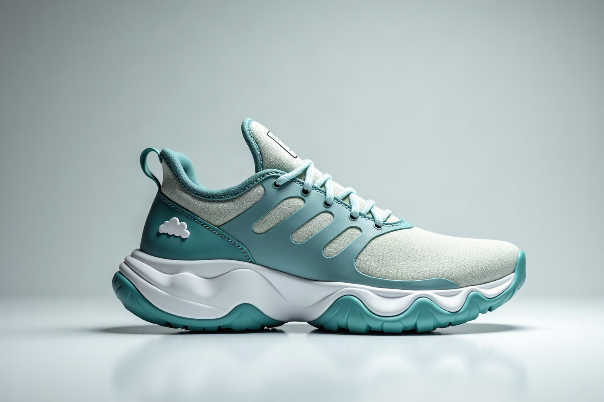

The CloudStep Zero is a lightweight daily trainer built around our WaveCloud™ foam midsole for cloud-soft landings — plush comfort without the bulk. A breathable engineered knit upper keeps every mile cool, while reflective heel accents keep you seen after dark. Made from vegan materials in a clean matte teal/white colorway.